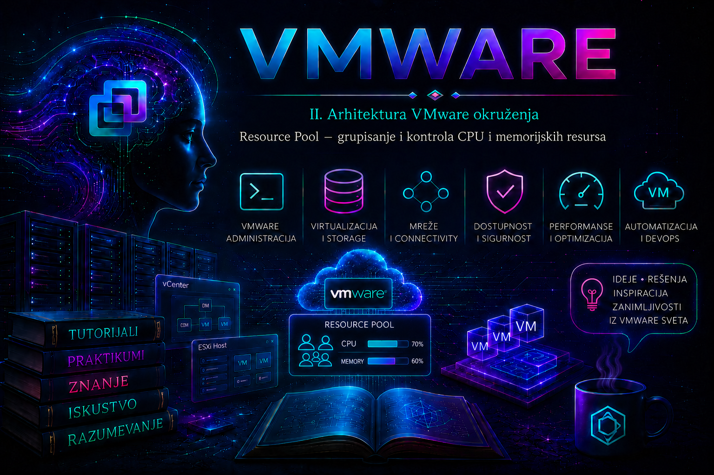

VMware

U prethodnoj lekciji datacenter, cluster i host posmatrani su kao objekti inventara i granice unutar kojih se organizuju fizički resursi. Resource Pool je sledeći sloj te hijerarhije: logička apstrakcija kojom se procesorski i memorijski kapacitet jednog ESXi hosta ili DRS klastera dodeljuje grupama virtuelnih mašina prema poslovnom značaju. Resource Pool ne dodaje hardver i ne izoluje fizička jezgra ili RAM module; on definiše pravila po kojima ESXi scheduler i, u klasteru, vSphere Distributed Resource Scheduler raspodeljuju postojeći kapacitet.
U malom laboratorijskom okruženju nekoliko virtuelnih mašina često može raditi sa podrazumevanim vrednostima. U zajedničkom enterprise klasteru situacija je drugačija: produkcija, razvoj, test, baze podataka i različiti zakupci mogu istovremeno zahtevati iste resurse. Administrator tada mora da razlikuje garanciju, gornju granicu i relativni prioritet. VMware ih predstavlja parametrima Reservation, Limit i Shares. Njihova pogrešna primena može prouzrokovati slabije performanse ili neuspešno uključivanje VM-a čak i kada na prvi pogled postoji slobodan kapacitet.
Zašto i kada koristiti Resource Pool
Resource Pool ima smisla kada se zajednički compute kapacitet deli između grupa sa različitim servisnim ciljevima. Tipični primeri su odvajanje produkcije od razvoja, raspodela kapaciteta organizacionim jedinicama, zaštita kritičnog aplikativnog sloja pri zagušenju i delegiranje administracije nad jasno definisanim delom inventara. Grupisanje VM-ova samo radi preglednosti nije dovoljan razlog: za to su pogodniji VM folders, oznake (tags) i prilagođeni atributi, jer ne menjaju način raspodele resursa.
| Potreba | Odgovarajući objekat ili mehanizam | Zašto |
|---|---|---|
| Vizuelno grupisanje i RBAC | VM folder i vCenter privilegije | Organizuje inventar bez uticaja na scheduling. |
| Pretraga po aplikaciji, vlasniku ili okruženju | Tag i kategorija | Metapodaci mogu pratiti VM kroz inventar. |
| Relativna prednost pri zagušenju | Resource Pool shares | Raspodeljuje sporni CPU ili memoriju između sibling objekata. |
| Garantovani minimum | Reservation | Rezervisani kapacitet učestvuje u admission control proveri. |
| Čvrsta gornja granica | Limit | Zaustavlja potrošnju iznad granice čak i kada kapacitet postoji. |
| Razdvajanje fault ili security domena | Poseban cluster ili hostovi, prema zahtevu | Resource Pool nije bezbednosna ni HA granica i ne obezbeđuje fizičku izolaciju. |
Položaj u hijerarhiji i koreni resursa
Svaki standalone ESXi host i svaki DRS cluster imaju skriveni root resource pool koji predstavlja ukupne raspoložive CPU i memorijske resurse tog compute objekta. Administrator ispod njega kreira child pool-ove, a oni mogu sadržati VM-ove i dodatne child pool-ove. Resource Pool kreiran neposredno na standalone hostu vezan je za kapacitet tog hosta; pool pod klasterom obuhvata agregirani kapacitet klastera i praktično se koristi uz uključen DRS, koji donosi odluke o početnom placement-u i migracijama.
Datacenter
└── Production-Cluster (root resource pool)
├── RP-Production
│ ├── RP-Database
│ └── RP-Application
└── RP-NonProduction
├── RP-Development
└── RP-TestHijerarhija nije samo dekorativna. Child objekti najpre dele resurse roditelja, a zatim se dobijeni kapacitet deli unutar svakog child pool-a. Zbog toga isti broj shares na različitim nivoima nema isto značenje. Duboka, nedokumentovana stabla otežavaju računanje efektivnog prioriteta i troubleshooting; u produkciji je bolje koristiti plitku hijerarhiju koja direktno prati poslovne klase usluge.
Reservation – garantovani minimum i admission control
Reservation je minimalna količina resursa koju sistem garantuje pool-u: CPU se izražava u MHz, a memorija u MB, GB ili odgovarajućoj jedinici prikazanoj u klijentu. Garancija nije unapred potrošena količina niti znači da će workload stalno koristiti taj kapacitet. Kada nema konkurencije, pool može koristiti više od rezervacije sve do svog limita i granica roditelja. Međutim, rezervacija se uračunava u dostupni nerezervisani kapacitet i može odlučiti da li će nova rezervacija ili power-on operacija proći admission control.
Rezervacija na Resource Pool-u nije automatska zasebna rezervacija za svaki VM. Ona predstavlja garantovani fond iz kog se, prema potražnji i pravilima raspodele, opslužuju potomci. Za VM sa sopstvenom rezervacijom mora postojati dovoljan efektivno dostupan rezervisani kapacitet kroz celu roditeljsku hijerarhiju. Prevelike rezervacije vezuju kapacitet, umanjuju operativnu fleksibilnost, mogu otežati placement i vMotion i mogu dovesti do poruke da u parent resource pool-u nema dovoljno resursa.
Opcija Expandable Reservation dozvoljava child pool-u da, kada njegova sopstvena rezervacija nije dovoljna za rezervacije potomaka, pozajmi raspoloživ nerezervisan kapacitet od roditelja. To nije beskonačna garancija i ne zaobilazi kapacitet roditelja: zahtev i dalje pada ako se potreban kapacitet ne može pronaći uz hijerarhiju. Isključivanje ove opcije pravi čvršću administrativnu granicu, ali zahteva preciznije planiranje.
Memory reservation: 16 GB
Memory limit: Unlimited
Expandable: Enabled
Tumačenje: pool ima garantovanih 16 GB; može koristiti više kada je dostupno,
a za rezervacije potomaka može zatražiti nerezervisani kapacitet roditelja.Limit – čvrsta gornja granica
Limit je maksimalan CPU ili memorijski kapacitet koji pool može dobiti. Vrednost Unlimited znači da posebna gornja granica nije nametnuta, ali pool i dalje zavisi od roditelja, konfiguracije VM-ova i fizičkog kapaciteta. Limit se primenjuje i kada postoje neiskorišćeni resursi izvan pool-a. Zbog toga je limit najčešći izvor „nevidljivog plafona”: aplikacija je spora, host deluje rasterećeno, ali je VM ograničen pravilom na svom pool-u ili nekom pretku.
CPU limit može povećati CPU ready i ograničiti efektivno izvršavanje vCPU-a. Memory limit ispod zbirno potrebne memorije potomaka može pokrenuti ballooning, compression, swapping ili druge mehanizme reclamation-a, uz veliko kašnjenje aplikacije. Limit je opravdan kada postoji stvarna poslovna kvota, kontrolisan laboratorijski scenario ili jasno ugovoren tenant cap. Kao podrazumevana produkciona praksa obično se ostavlja Unlimited, a prioritet se reguliše shares vrednostima i razumno dimenzionisanim rezervacijama.
Shares – relativni prioritet pri konkurenciji
Shares određuju relativni udeo samo kada sibling objekti istovremeno traže više resursa nego što roditelj može da obezbedi. Dok nema contention-a, High pool ne dobija „brži procesor”, a Low pool nije namerno usporen. Ako dva sibling pool-a imaju 4.000 i 2.000 CPU shares i oba potpuno zahtevaju sporni kapacitet, prvi dobija približno dve trećine, a drugi jednu trećinu kapaciteta koji ostane nakon zadovoljavanja relevantnih rezervacija i limita. Ako prvi ne traži svoj deo, drugi može koristiti slobodan kapacitet.
| Parametar | Odgovara na pitanje | Deluje kada | Glavni rizik |
|---|---|---|---|
| Reservation | Koliki minimum je garantovan? | Admission control i contention | Prekomerno vezivanje kapaciteta i neuspešan placement/power-on |
| Limit | Koliki maksimum sme da se koristi? | Uvek kada potražnja pređe limit | Veštačko usko grlo iako postoji slobodan hardver |
| Shares | Ko ima relativnu prednost? | Samo između konkurentnih sibling objekata | Pogrešno poređenje shares iz različitih roditelja ili nivoa |
Nivoi Low, Normal i High predstavljaju unapred definisane relativne težine; Custom omogućava ručni broj shares. CPU i memory shares su nezavisni. Kod tradicionalnih shares vrednosti ukupan prioritet pool-a ostaje isti bez obzira na broj VM-ova, pa dodavanje VM-ova smanjuje prosečan udeo po VM-u. Scalable Shares, dostupne u novijim vSphere izdanjima za DRS resource pool-ove, dinamički prilagođavaju efektivne shares prema broju VM-ova u pool-u i korisne su kada se membership često menja. Pre uključivanja treba proveriti tačnu verziju vCenter/ESXi sistema i posledice po postojeći model prioriteta; promena može promeniti raspodelu pri sledećem contention-u.
Primer projektovanja raspodele
Pretpostavimo da zajednički DRS cluster pruža 64 fizička CPU jezgra i 512 GB RAM-a. Poslovni zahtev glasi: produkcija mora imati prednost pri zagušenju, baza mora dobiti dokazano potreban minimum, razvoj može koristiti sav slobodan kapacitet, a test okruženje ne sme ugroziti produkciju. To se ne prevodi automatski u mnoštvo limita.
RP-Production
CPU shares: High
Memory shares: High
Limit: Unlimited
Reservation: samo izmeren i odobren minimum
RP-Development
CPU shares: Normal
Memory shares: Normal
Limit: Unlimited, osim ako postoji stvarna kvota
RP-Test
CPU shares: Low
Memory shares: Low
Limit: samo ako poslovna politika zahteva čvrst plafonOvaj model omogućava neprodukcijskim VM-ovima da koriste slobodan kapacitet van perioda opterećenja, a produkciji daje relativnu prednost kada svi traže resurse. Rezervacija se određuje iz merenja stabilne potražnje i servisnog cilja, ne iz zbira konfigurisanog vRAM-a ili pretpostavke „što više, to sigurnije”. Čvrsti test limit uvodi se tek kada je važnija kvota od efikasnog iskorišćenja klastera.
Resource Pool, DRS, HA i ostali mehanizmi
DRS procenjuje potražnju VM-ova, bira host pri uključivanju i, u zavisnosti od automation level-a, preporučuje ili izvršava vMotion radi boljeg balansa. Resource Pool daje DRS-u prioritete i granice, ali ne garantuje da će VM biti na određenom hostu. Za placement ograničenja koriste se VM-Host affinity/anti-affinity pravila i druge odgovarajuće politike. Nejednak broj VM-ova po hostu nije sam po sebi kvar: cilj DRS-a je zadovoljenje workload-a i resursna efikasnost, ne estetski jednak raspored.
vSphere HA restartuje VM-ove nakon otkaza hosta i ima sopstveni admission control za failover kapacitet. Resource Pool nije HA mehanizam, ne kopira podatke i ne obezbeđuje rezervni host. Posle HA događaja manji preostali kapacitet može stvoriti contention, kada shares i rezervacije postaju naročito značajni. Takođe, Resource Pool ne kontroliše datastore I/O ili mrežni bandwidth; za te oblasti postoje posebne storage, network i policy funkcije.
Kreiranje i izmena u vSphere Client-u
- Izaberite odgovarajući DRS cluster, standalone host ili postojeći parent Resource Pool.
- Pokrenite New Resource Pool i unesite naziv koji prati dokumentovani standard, na primer
RP-Development. - Za CPU i Memory podesite Shares, Reservation, Expandable Reservation i Limit prema odobrenom dizajnu. Ne unosite probni produkcioni limit bez baseline merenja.
- Ako izdanje i kontekst nude Scalable Shares, uključite ih samo kada je dinamičko prilagođavanje shares namerna dizajnerska odluka.
- Pregledajte sažetak i završite kreiranje. Zatim premestite odabrane VM-ove u pool; ova inventarska operacija ne migrira njihove diskove niti nužno menja host.
- Na karticama Monitor, Performance, Tasks and Events proverite rezultat i zabeležite početne metrike.
Potrebne privilegije zavise od tačne verzije i delegiranog modela, ali nalog mora imati prava za kreiranje/izmenu Resource Pool-a i, za preseljenje VM-a, odgovarajuća prava nad izvornim VM-om i odredišnim pool-om. Produkcioni rad treba obaviti kroz change proceduru sa snimljenim starim vrednostima; screenshot nije zamena za mašinski čitljiv inventar.
PowerCLI administracija i dokaz stanja
Sledeće komande izvršavaju se u PowerShell-u sa instaliranim VMware/VCF PowerCLI modulima i nalogom koji ima odgovarajuće vCenter privilegije. Prva grupa je read-only i bezbedna je za prikupljanje inventara. Izlaz čuvajte uz change zapis.
Connect-VIServer -Server 'vcsa.lab.local'
$cluster = Get-Cluster -Name 'Lab-Cluster'
Get-ResourcePool -Location $cluster |
Select-Object Name, Parent, CpuSharesLevel, NumCpuShares,
CpuReservationMhz, CpuLimitMhz, MemSharesLevel, NumMemShares,
MemReservationGB, MemLimitGB |
Format-Table -AutoSize
Get-ResourcePool -Name 'RP-Development' |
Get-VM |
Select-Object Name, PowerState, NumCpu, MemoryGB
Parametri cmdlet-a mogu se razlikovati između verzija modula. Pre state-changing operacije proverite lokalnu sintaksu pomoću Get-Help New-ResourcePool -Full i Get-Help Set-ResourcePool -Full. Sledeći laboratorijski primer kreira pool sa relativnim prioritetom, bez čvrstog limita; vrednosti i dostupni parametri moraju se potvrditi u korišćenoj PowerCLI verziji.
$cluster = Get-Cluster -Name 'Lab-Cluster'
$pool = New-ResourcePool `
-Location $cluster `
-Name 'RP-Development' `
-CpuSharesLevel Normal `
-MemSharesLevel Normal
Get-ResourcePool -Id $pool.Id |
Format-List Name, Parent, CpuSharesLevel, CpuReservationMhz,
CpuLimitMhz, MemSharesLevel, MemReservationGB, MemLimitGB
Premeštanje VM-a menja njegovo mesto u resursnoj hijerarhiji i time efektivna pravila scheduling-a. Komanda je state-changing; prvo proverite jedinstvenost imena i odredište, zatim koristite -WhatIf ako ga instalirana verzija cmdlet-a podržava.
$vm = Get-VM -Name 'Test01'
$destination = Get-ResourcePool -Name 'RP-Development' -Location $cluster
Move-VM -VM $vm -Destination $destination -WhatIf
Move-VM -VM $vm -Destination $destination
Get-VM -Name 'Test01' | Select-Object Name, ResourcePoolESXi alati, metrike i logovi
Resource Pool dizajn se primarno administrira iz vCenter-a, PowerCLI-ja ili API-ja; esxcli nije glavni alat za upravljanje ovom hijerarhijom. Na ESXi Shell-u, uz privremeno i kontrolisano omogućen pristup, esxtop služi za korelaciju scheduler simptoma. Shell pristup nosi bezbednosni rizik, pa ga posle dijagnostike treba isključiti prema politici organizacije.
# Read-only inventar fizičkog CPU-a i memorije na konkretnom ESXi hostu
esxcli hardware cpu list
esxcli hardware memory get
# Interaktivno praćenje; pritisnite c za CPU ili m za memorijski prikaz
esxtop| Dokaz | Šta tražiti | Tumačenje |
|---|---|---|
| CPU ready, usage i demand | Trajno povišen ready uz aktivan workload | Contention, prevelik vCPU sizing ili CPU limit; korelisati sa hostom i precima pool-a. |
| Memory consumed, active, balloon, compressed, swapped | Rast reclamation metrika i latencije | Pritisak memorije ili limit; sama guest prijava memorije nije dovoljan dokaz. |
| Resource Pool entitlement/demand | Demand iznad entitlement-a ili limit blizu potrošnje | Pool ne dobija traženi kapacitet zbog konkurencije ili konfiguracione granice. |
| Tasks and Events | Ko je, kada i na kom objektu menjao postavke | Audit trag i korelacija sa početkom incidenta. |
/var/log/vmkernel.log i /var/log/hostd.log | Scheduler, VM reconfiguration i host-side greške u relevantnom vremenu | Koristiti uz vCenter događaje; ne donositi zaključak iz izdvojene linije. |
vCenter vpxd.log | DRS, task i konfiguracione poruke | Pristupa se kontrolisano na VCSA; vreme uskladiti sa host logovima. |
Praktikum – projektovanje, primena i validacija Resource Pool-a
Cilj: u izolovanom DRS laboratorijskom klasteru kreirati produkcioni i razvojni pool, potvrditi da shares menjaju raspodelu tek pod konkurencijom, simulirati pogrešan limit, prikupiti dokaze i vratiti laboratoriju u početno stanje. Vežbu ne izvoditi na produkciji bez odobrenog change-a i baseline-a.
Topologija i preduslovi: vCenter, cluster Lab-Cluster sa najmanje dva kompatibilna ESXi hosta, uključen DRS, test VM-ovi Prod-Load01 i Dev-Load01, bez poslovnih podataka, instaliran VMware Tools i PowerCLI radna stanica. Nalog mora imati potrebne Resource Pool i VM privilegije. Zabeležite DRS automation level, postojeće reservations/limits/shares, aktivne alarme i slobodan kapacitet. Za generisanje opterećenja koristite odobren alat unutar gostujućeg OS-a; ova lekcija namerno ne pokreće destruktivne stress komande.
Vežba 1 – baseline i bezbedno kreiranje
- U vSphere Client-u proverite da oba test VM-a rade bez CPU ili memory limita i da cluster nema aktivan resursni alarm.
- Izvezite postojeći Resource Pool inventar PowerCLI read-only upitom iz prethodne celine.
- Kreirajte
RP-Production-Labsa High CPU/Memory shares, reservation 0 i limit Unlimited. - Kreirajte
RP-Development-Labsa Low CPU/Memory shares, reservation 0 i limit Unlimited. - Premestite odgovarajući test VM u svaki pool. Potvrdite membership iz Client-a i PowerCLI-ja.
- Na Performance grafikonima snimite CPU usage, demand i ready, kao i memory active, consumed, ballooned i swapped tokom najmanje jednog reprezentativnog intervala bez contention-a.
Očekivani rezultat: oba VM-a rade normalno; High shares ne proizvode merljivo ubrzanje dok resurs nije sporan. Kriterijum završetka je dokumentovan baseline, dva ispravno kreirana pool-a i dokaz da svaki sadrži samo planirani test VM.
Vežba 2 – dokaz relativnog prioriteta
- Pokrenite isto, kontrolisano CPU opterećenje u oba test VM-a. Povećavajte ga samo do nivoa na kom laboratorijski cluster ili zajednički roditelj zaista postane CPU constrained.
- Posmatrajte VM i Resource Pool performance metrike. Uporedite demand, usage, entitlement i ready; proverite da li su VM-ovi na istom ili različitim hostovima i zabeležite DRS migracije.
- Potvrdite da produkcioni pool pod contention-om dobija relativnu prednost. Ne očekujte fiksni procenat ako se potražnja, placement ili druge rezervacije menjaju.
- Zaustavite generator opterećenja i potvrdite da se metrike vraćaju ka baseline-u.
Ako nema razlike, prvo proverite da li je contention uopšte postojao, zatim sibling odnos pool-ova, efektivne shares, DRS placement i limite na VM-u i svim precima. Nasumično povećavanje rezervacije nije validna dijagnostika.
Vežba 3 – incident sa pogrešnim limitom
Rizik: limit namerno degradira test workload. Vežba je dozvoljena samo u laboratoriji. Pre izmene zapišite tačnu staru vrednost; rollback je vraćanje limita na Unlimited.
- Na
RP-Development-Labpostavite privremeni CPU limit dovoljno nizak da se posledica vidi, ali da vCenter i infrastrukturne VM-ove ne ugrozi. - Pokrenite samo razvojno test opterećenje. Zabeležite simptom u guest-u, CPU demand/usage/ready, host iskorišćenje, pool limit i događaj promene.
- Formulišite hipotezu: „razvojni VM je usporen jer efektivni limit pool-a ograničava CPU, a ne zato što host nema kapacitet”. Potvrdite je poređenjem visokog demand-a, dostignutog limita i slobodnog kapaciteta izvan pool-a.
- Vratite limit na Unlimited, zaustavite opterećenje i proverite oporavak istim metrikama.
Incident zapis: simptom je povećana latencija; obim je razvojni pool i njegovi potomci; neposredni uzrok je CPU throttling; osnovni uzrok je neodobrena ili pogrešno dimenzionisana kvota; privremeno rešenje je kontrolisano povećanje/uklanjanje limita; trajna mera je change kontrola, baseline i alarm za približavanje limitu. Kriterijum završetka je dokaz uzroka pre korekcije i dokaz oporavka posle rollback-a.
Vežba 4 – admission control i bezbedan rollback
- Bez menjanja stanja izračunajte zbir postojećih VM i pool rezervacija i uporedite ga sa dostupnim nerezervisanim kapacitetom roditelja.
- U Client-u pregledajte Expandable Reservation. Diskutujte da li child treba da pozajmljuje rezervaciju od roditelja ili poslovna kvota zahteva čvrstu granicu.
- Ne izazivajte produkcioni power-on failure. U laboratoriji se neuspeh može bezbedno demonstrirati samo malim, privremenim zahtevom čiji je rollback unapred određen.
- Po završetku vratite sve promenjene reservations, limits i shares na početne vrednosti, premestite VM-ove u njihov početni parent i uklonite samo laboratorijske pool-ove kada su prazni.
- Potvrdite da nema novih alarma, da su VM-ovi u očekivanom stanju i da se konačni PowerCLI inventar podudara sa početnim.
Sistematičan troubleshooting
- Definišite simptom i obim: jedan VM, svi VM-ovi u pool-u, jedan host ili ceo cluster; CPU, memory ili power-on problem.
- Sačuvajte dokaze: poslednje promene, Tasks and Events, alarme, performance grafikone, DRS preporuke i relevantne logove u istom vremenskom prozoru.
- Pratite hijerarhiju: proverite VM postavke, neposredni pool i svaki parent do root-a. Efektivna granica može biti nasleđena.
- Razdvojite demand od konfiguracije: proverite da li stvarno postoji contention, da li je dostignut limit i da li rezervacija blokira admission control.
- Proverite placement zavisnosti: DRS stanje, automation level, affinity pravila, maintenance mode, kompatibilnost i dostupnost hostova.
- Menjajte jednu stvar: primenite najmanju reverzibilnu korekciju, validirajte istim metrikama i dokumentujte uzrok, posledicu i trajnu meru.
Najčešće greške
- korišćenje Resource Pool-a kao foldera i stvaranje duboke hijerarhije bez resursnog razloga;
- tumačenje High shares kao trajne garancije performansi, čak i bez contention-a;
- poređenje apsolutnog broja shares između objekata koji nemaju istog parent-a;
- postavljanje CPU ili memory limita „za svaki slučaj”, pa nastanak throttling-a i reclamation-a uz slobodan kapacitet;
- rezervisanje celog konfigurisanog kapaciteta bez merenja i razumevanja admission control posledica;
- promena pool-a bez provere pojedinačnih VM limits/reservations i bez pregleda svih predaka;
- zaključak da DRS ne radi samo zato što broj VM-ova po hostovima nije jednak;
- brisanje pool-a ili masovno premeštanje VM-ova bez provere novih efektivnih pravila.
Administratorske prakse
- Resource Pool vezati za merljivu poslovnu klasu usluge, vlasnika i odobrenu politiku, a organizaciju inventara rešavati folderima i tagovima.
- Shares koristiti kao osnovni mehanizam relativnog prioriteta; reservation zasnivati na merenju, a limit uvoditi samo uz opravdanu kvotu.
- Održavati plitku hijerarhiju i dokumentovati parent-child odnose, efektivne vrednosti, Expandable Reservation i Scalable Shares odluke.
- Pre svake izmene sačuvati konfiguraciju i baseline, proveriti VM i sve parent objekte, zatim primeniti jednu reverzibilnu promenu.
- Alarmima i kapacitivnim izveštajima pratiti demand, entitlement, ready, reclamation, rezervisani i nerezervisani kapacitet, ne samo prosečan usage.
- Redovno proveravati da li se membership i poslovni prioriteti još podudaraju; napušten pool sa starim limitom može godinama ostati skriven uzrok incidenta.
Završna kontrolna tačka
Lekcija je savladana kada administrator može da razlikuje Resource Pool od foldera i granice dostupnosti, nacrta njegov položaj u compute hijerarhiji, objasni Reservation, Limit, Shares, Expandable Reservation i Scalable Shares, predvidi njihovu interakciju sa DRS-om i admission control-om, kreira i validira pool u vSphere Client-u i PowerCLI-ju, dokaže contention odgovarajućim metrikama, pronađe efektivni limit kroz sve parent objekte i bezbedno vrati konfiguraciju u početno stanje. Završetak nije uspešan samo zato što je objekat kreiran; potreban je dokaz da poslovni prioritet proizvodi očekivano ponašanje bez neželjenog uticaja na druge workload-e.
Zaključak
Resource Pool pretvara zajednički CPU i memorijski kapacitet u upravljivu hijerarhiju garancija, granica i relativnih prioriteta. Njegova najveća vrednost nije u broju kreiranih pool-ova, već u preciznom prevođenju poslovnih potreba u pravila koja scheduler može dosledno sprovesti. Reservation štiti dokazani minimum, Limit postavlja čvrst plafon, a Shares pravedno raspoređuju sporni resurs; nijedan od tih parametara ne zamenjuje kapacitivno planiranje, HA, bezbednosnu izolaciju ili dobro dimenzionisanje VM-ova.
Odgovoran administrator zato počinje merenjem i jasnim servisnim ciljem, čuva početno stanje, proverava celu hijerarhiju i svaku izmenu potvrđuje metrikama, događajima i ponašanjem aplikacije. Tako Resource Pool ostaje instrument predvidivosti i efikasnog deljenja infrastrukture, umesto skrivenog izvora ograničenja koji se otkriva tek tokom incidenta.